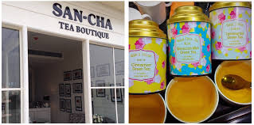
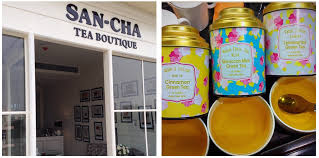

My Favourite TEA Beverage Store
 

Sancha Tea Boutique,Daryaganj
About Sancha Tea Boutique by Aap Ki Pasand:
India's most famous tea shop was established in 1981, by master tea taster Sanjay Kapur in Darya Ganj, near the red fort.The company branch at Santushti Shopping Complex carries forward our famous tea traditions. Taste before you buy, the finest selection of Indian Teas from Darjeeling, Assam, Nilgiri, Kangra, Sikkim and Munnar. The tea is packaged in ethnic Indian fabric bags which are great keepsakes as well as perfect gifts. 3 decades hence, SANCHA, Aap Ki Pasand Tea is an established brand in Japan, Korea and Russia to name a few countries. The SANCHA brand known for its high quality tea around India and overseas.Serving India's finest and the freshest teas for 3 generations.AwardsQuoted as carrying- 'Worlds Finest Tea Selections...' by the Time Magazines Business and Pleasure Guide to AsiaProducts Darjeeling Black Teas (First, Second and Autumn Flush Teas) Assam Black Teas, Nilgiri Black Teas, Masala Chai, Green Teas, Naturally Flavored Green Teas, Oolong Teas, White Teas, Corporate Gift Packs of Teas, Tea Bag Range.
To give feedback,click the link given below:
click here